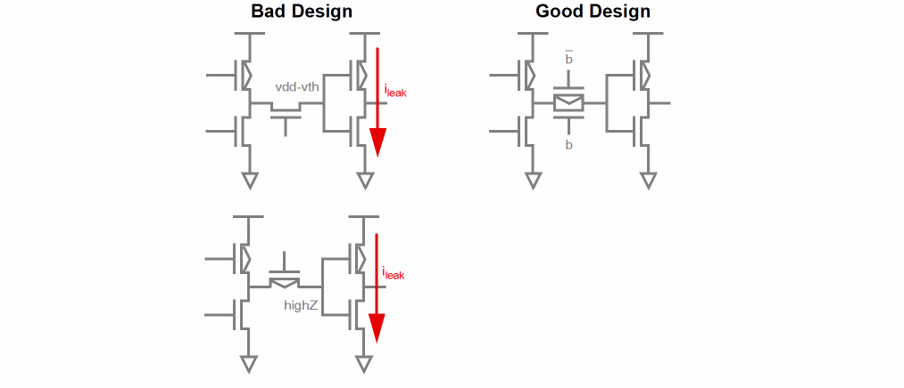
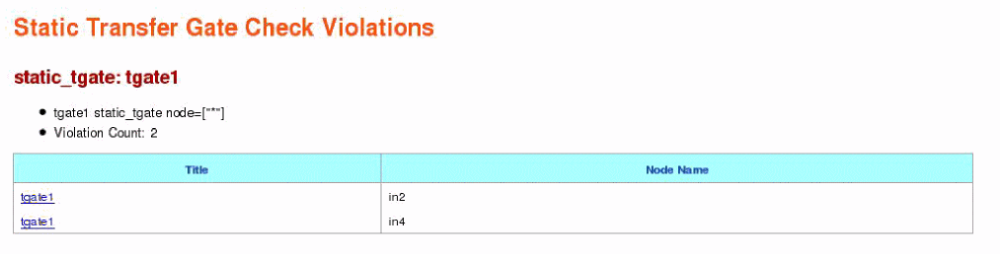

Static Transmission Gate Check (static_tgate)
Spectre Syntax
title static_tgate node=[n1 n2 ...] <inst=[inst1 inst2...]> <xinst=[xinst1 xinst2...]> <subckt=[subckt1 subckt2....]> <xsubckt=[xsubckt1 xsubckt2....]> <depth=n> error_limit=<value>
SPICE Syntax
.cck title static_tgate node=[n1 n2 ...] <inst=[inst1 inst2...]> <xinst=[xinst1 xinst2...]> <subckt=[subckt1 subckt2....]> <xsubckt=[xsubckt1 xsubckt2....]> <depth=n> error_limit=<value>
Description
Reports transmission gates which may cause potential leakage currents between power supplies. Such gates can be characterized by their node connectivity, based on the following:
- Nodes which connect to gate and NMOS drain/source terminals, but not to PMOS drain/source terminals
- Nodes which connect to gate and PMOS drain/source terminals, but not to NMOS drain/source terminals
The results are written to a file with the extension static.xml, which can be viewed with a Web browser.

Arguments
Example
tgate1 static_tgate node=["*"]
.cck tgate1 static_tgate node=["*"]
The above command will report all nodes connecting to transmission gates that may cause design problems like leakage currents. The following is an example of the report that is displayed in the Web browser:

Related Topics
Return to top